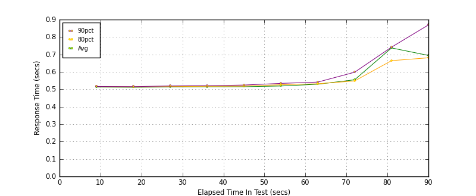
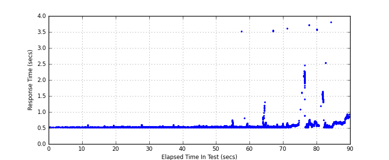
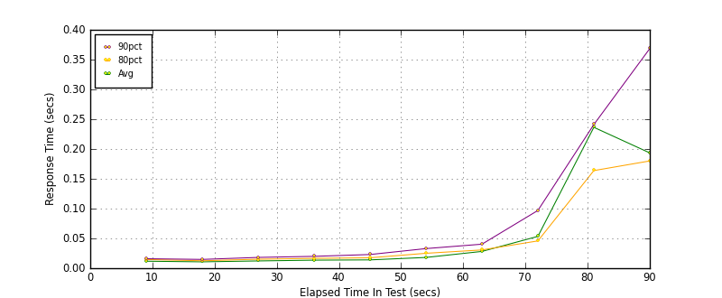
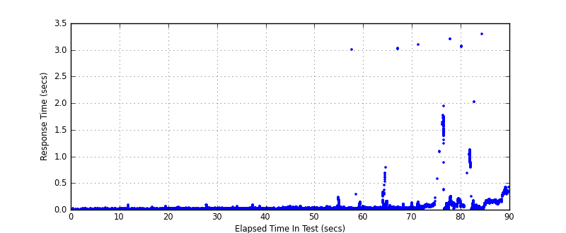
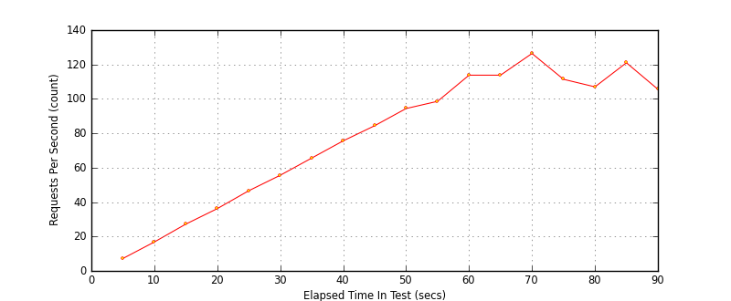

Performance Results Report
Summary
transactions: 7126
errors: 0
run time: 90 secs
rampup: 90 secs
test start: 2010-02-20 18:53:17
test finish: 2010-02-20 18:54:47
time-series interval: 9 secs
workload configuration:
| group name | threads | script name |
|---|
| user_group-2 | 45 | django_load.py |
| user_group-1 | 45 | django_load.py |
All Transactions
Response Time Summary (secs)
| count | min | avg | 80pct | 90pct | 95pct | max | stdev |
|---|
| 7126 | 0.506 | 0.579 | 0.580 | 0.649 | 0.699 | 3.801 | 0.231 |
Interval Details (secs)
| interval | count | avg | 80pct | 90pct | 95pct | stdev |
|---|
| 1 | 100 | 0.513 | 0.515 | 0.517 | 0.519 | 0.004 |
| 2 | 260 | 0.512 | 0.513 | 0.516 | 0.518 | 0.008 |
| 3 | 414 | 0.513 | 0.516 | 0.519 | 0.526 | 0.007 |
| 4 | 574 | 0.514 | 0.517 | 0.521 | 0.527 | 0.009 |
| 5 | 728 | 0.515 | 0.518 | 0.524 | 0.530 | 0.010 |
| 6 | 878 | 0.519 | 0.526 | 0.534 | 0.539 | 0.010 |
| 7 | 1015 | 0.529 | 0.532 | 0.541 | 0.585 | 0.098 |
| 8 | 1111 | 0.555 | 0.548 | 0.598 | 0.642 | 0.193 |
| 9 | 868 | 0.737 | 0.664 | 0.742 | 2.062 | 0.476 |
| 10 | 1088 | 0.694 | 0.681 | 0.869 | 1.398 | 0.263 |
Graphs
Response Time: 9 sec time-series

Response Time: raw data (all points)

Throughput: 5 sec time-series

Custom Timer: Django_Debug_Page
Response Time Summary (secs)
| count | min | avg | 80pct | 90pct | 95pct | max | stdev |
|---|
| 7036 | 0.005 | 0.078 | 0.079 | 0.148 | 0.198 | 3.301 | 0.231 |
Interval Details (secs)
| interval | count | avg | 80pct | 90pct | 95pct | stdev |
|---|
| 1 | 100 | 0.012 | 0.015 | 0.016 | 0.018 | 0.004 |
| 2 | 260 | 0.011 | 0.012 | 0.015 | 0.017 | 0.008 |
| 3 | 414 | 0.012 | 0.015 | 0.018 | 0.025 | 0.006 |
| 4 | 574 | 0.014 | 0.017 | 0.020 | 0.026 | 0.009 |
| 5 | 728 | 0.014 | 0.017 | 0.023 | 0.029 | 0.009 |
| 6 | 878 | 0.018 | 0.025 | 0.033 | 0.038 | 0.010 |
| 7 | 1015 | 0.028 | 0.031 | 0.040 | 0.084 | 0.098 |
| 8 | 1111 | 0.053 | 0.046 | 0.097 | 0.141 | 0.193 |
| 9 | 868 | 0.236 | 0.164 | 0.241 | 1.561 | 0.476 |
| 10 | 1088 | 0.193 | 0.180 | 0.369 | 0.897 | 0.263 |
Graphs
Response Time: 9 sec time-series

Response Time: raw data (all points)

Throughput: 5 sec time-series
